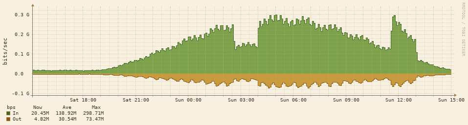

Daylight contrast fixtures
Invented content only. Inspect normal and keyboard-focus states; hover the table rows. Night mode · Light mode.
Banners and badges
Settings saved. Review settings
Sensor above threshold. Review threshold
Discovery queued. View queue
Device unavailable. View device
Ignored
Up
Warning
Information
Down
Forms
Normal help text
ms
Threshold accepted
ms
Check this threshold
ms
A positive value is required
Tables
| Device | Status |
|---|---|
| Normal row | Ready |
| Striped row | Ready |
| Recovered device | Up |
| Busy device | Warning |
| Queued device | Information |
| Unavailable device | Down |
Graph

Check axis labels, legend, grid and traffic outlines. The image uses the same palette in either mode.